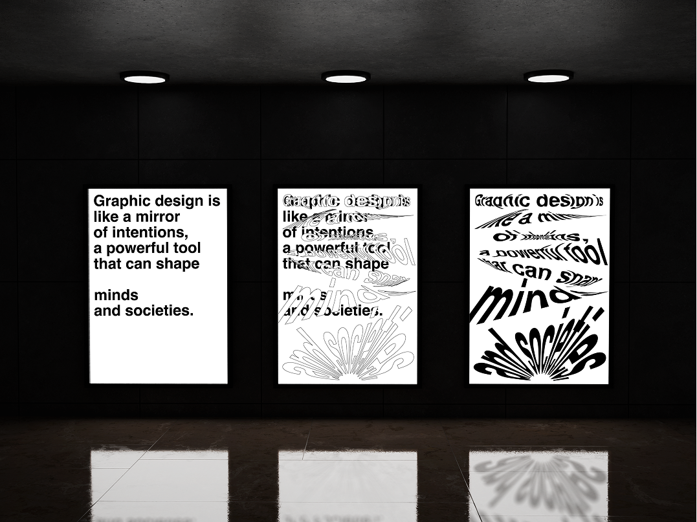

The task
The task was to create a poster series about what graphic design is to us.
My interpretation
For me graphic is like mirror of intentions, that can shape perspectives. I made this poster series through an animation in after effects.
